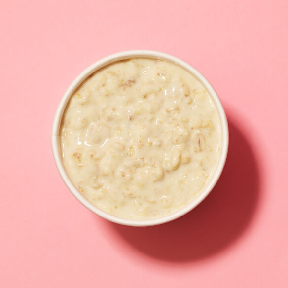

Protein Oats

This is a healthy protein oats recipe that you can have ever morning for vital energy, proteins needed
for fitness and general health and wellbeing everyday.
Ingredients
- 120g Oats
- 50g Protein Powder of your choice
- 2 tablespoons of peanut butter
- 1 chopped banana for sweetness (optional)
- Water as needed
Steps
- Add porridge to boil with water
- Add in protein powder
- Add in peanut butter and stir well
- Add more water as needed and chopped bananas